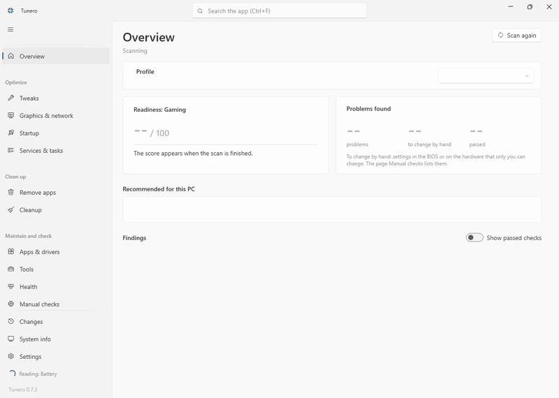

Gaming first, with profiles for laptops, battery, office, quiet and older PCs. Every check and every change comes with an explanation and sources, and every change can be undone. One exe, English and German, free and open source.

Read-only checks find real problems, such as a monitor at 60 Hz, memory without XMP or the wrong power plan, and explain how to fix them.
A checklist of fixes and changes that fit this PC and your profile. One confirmation lists every value before anything changes.
Each change is backed up first and can be undone on the Changes page, also after a restart. A restore point comes first.
A reviewed list of removable apps, desktop programs with their uninstaller, and cleanup categories that never follow links.
No update restarts in the evening, restarts when you choose, monthly updates a week later. Documented policies only.
Over 200 tweaks with impact, evidence and risk, an Autoruns-style startup list, services, NVIDIA settings, a frame time benchmark and a command line.
Tweaks without evidence are left out, and the search tells you why when you look for one.
No service, no tray icon, no telemetry. The app runs only when you start it.
Recommends only what fits this PC, and keeps risky changes behind Expert mode.
Tunero is a preview. Every change is tested for apply and undo, and a test plan runs in a virtual machine before releases. It is not code signed yet, so Windows SmartScreen may warn on the first start.
Free code signing provided by SignPath.io, certificate by SignPath Foundation. The project is applying; until it is accepted, releases are not code signed. The full policy with team roles is in the README.
Privacy: this program will not transfer any information to other networked systems unless specifically requested by the user or the person installing or operating it. Details: PRIVACY.md.